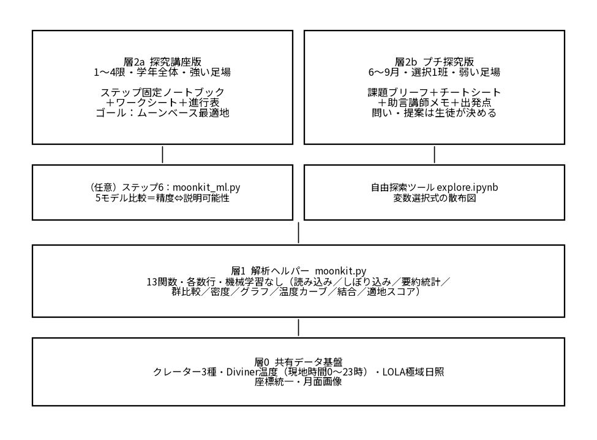

2022 年度の学習指導要領改訂により「情報Ⅰ」と「総合的な探究の時間」が必修化され，実社会のデータを用いた探究の重要性が高まっている。とりわけ月・惑星探査機が取得した空間データは，自然現象や物理法則を俯瞰的に可視化する題材として注目されている[1]。
一方で，こうしたデータを扱う実践の多くは，大気補正・幾何補正などの専門的な前処理や，GDAL 等の専門ライブラリの利用を前提としており，一般の教室に広げる際の障壁が大きい。認定 NPO 法人カタリバの調査では探究学習の担当教員の 95% が課題を感じており，指導の負担や「単なる調べ学習で終わる」ジレンマが指摘されている[1]。
また，石田（2022）は，横浜サイエンスフロンティア高校での比較調査から，「自らテーマを決めデータを取得する授業」は「データを与えられる授業」と比べて有意に「楽しかった」「理解できた」との回答が多いことを報告している[2]。
そこで本研究では，GDAL 等の専門環境を必要とせず，情報Ⅰの範囲（散布図・基本統計量・条件分岐）に収まる形で，月の前処理済み公開データを使った探究学習教材を開発することを目的とした。フィールド研究 A（附属高校）では受け入れ先の探究カリキュラムの構造を，フィールド研究 B（笠井研究室）では月科学の観点を取り入れた。
附属高校「SSH 探究基礎（1 年次）」の年間計画を分析し，本教材を差し込みうる枠として「探究講座『データ分析と探究活動』」（1〜4 限）と「プチ探究」（テーマ選択制，6〜9 月）の二つがあること，両者は生徒に求める主体性の度合いも時間も異なることを確認した。
この違いを踏まえ，教材を三層に再編した（図 1）。層 0 は共有データ基盤，層 1 は解析ヘルパー，層 2 は「二つの届け方」である。データ基盤は 5 種（クレーターカタログ 3 種，Diviner 温度，LOLA 極域日照）に確定し，件数・列名・座標系を実データで検証した[3–7]。
Diviner 温度は当初「正午・深夜 0 時の 2 時点」のみであったが，探究の中心に据えた「温度のばらつき（分散）から昼夜差を読み取る」活動が成立しないため，UCLA が公開する瞬間温度マップ 24 枚（subsolar 経度を 15 度刻み）を現地時間に位相合わせし，地点ごとに現地時間 0〜23 時の温度カーブに作り替えた[6]。
解析ヘルパー（moonkit.py，13 関数，各数行，機械学習を含まない）を実装し，Google Colaboratory 上で追加インストールなしに使えるようにした。関数の中身は数行に留め，情報Ⅰの範囲を超える処理を隠さない方針とした。
機械学習は当初スコープ外としていたが，「データ分析と探究活動」の枠が元来データサイエンスを扱う講座であること，および「モデルは複数あり，精度と説明可能性はトレードオフで，選ぶ責任は人にある」という点自体に教育的価値があることを踏まえ，「一つの課題・二つの特徴量・一つの関数でモデルを取り替え，決定境界の形と精度を比べる」任意の 1 ステップに限って導入した。

GitHub リポジトリ一式（Colab から起動）を作成した。主な内容は次のとおり。
(1) 探究講座版：ステップを固定したノートブック，紙のワークシート（A4・3 頁），教員用進行表（175 分）。生徒はコードを書かず，指定箇所の数値のみを書き換える。(2) プチ探究版：課題ブリーフ，ヘルパーのチートシート，助言講師用メモ，最小の出発点ノートブック。問い・評価基準・提案は生徒が決める。(3) 任意の機械学習比較ステップ（moonkit_ml.py と専用ノートブック）。(4) 変数選択式の自由探索ツール。
探究講座版を実データで通し，1〜4 限で完走できることを確認した。基地の用途（太陽光発電・氷採掘・有人）を班ごとに選ばせる設計により，同じデータから異なる最適地が導かれ，共有の段階で「目的が変われば最適解が変わる」ことを扱える。
導入では「温度のばらつき＝1 日の温度のふれ幅」を，24 時間の温度カーブと分散の両方で体感させる。赤道帯で 1 日の温度差は約 290 K に達し，大気のない放射環境の理解につながる。
LOLA 日照率は，算出手法によって絶対値が変わるため，「暗い・明るい」の順序のみ信頼し，絶対値を他文献と単純比較させない設計とした。永久影で知られるクレーターでの検算により方向性は裏付けられている[7]。
機械学習の比較ステップでは，5 モデルの正解率がほぼ横並び（98% 前後）である一方，決定境界の形と説明可能性が大きく異なることを可視化できる。決定木が見つけた規則は「日照率がほぼ 0 なら永久影」という一つのしきい値であり，生徒が手で決めたしきい値との比較が可能である。
実授業での検証は今後の課題である。附属高校訪問時に現場教員および研究室のレビューを受け，教材に反映する。
第一に，実授業での試行と，生徒の探究プロセス（予想→反証→仮説の修正）が機能するかの検証。第二に，地形・資源データを統合し自動分類まで行う規模の講座への発展（本研究では扱わない）。第三に，地球観測データ（居住地域の気候等）との二段構えのカリキュラム化。第四に，修士研究（笠井研究室 TSUKIMI の観測データと物理制約付き学習）との接続である。
（SUDO Mitsutaka）